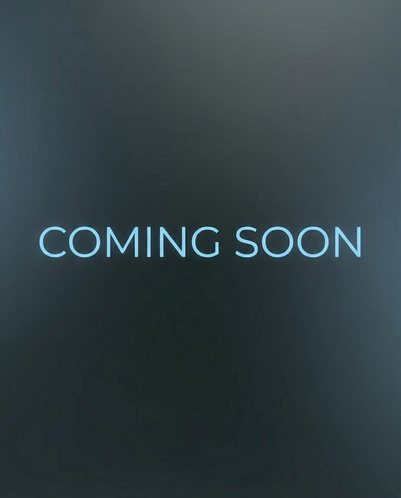

Explore our work with clients across the digital landscape. From building websites and crafting strategic designs to creating compelling graphics.
.png)
Autism From the Start provides developmental services for kids with autism before they enter elementary school. LUMO worked with AFTS to redesign their website, integrate search engine optimization techniques, set up and track user activity, create customer and employee acquisition campaigns, video production, professional photography, and many behind the scenes website maintenance. Creating analytical trackers and reports led us to learn more about the user experience on the website, which then led to strategic structure, SEO, and campaign planning. Check out their website here!

Virtue Production is a sound production company based in Nashville. They offer sound production for events such as concerts, weddings, parties, and corporate events. Virtue also offers gear rentals for bands or personnel in need of audio equipment rather than a crew. We recently finished their website and are now looking forward to customer acquisition campaigns. LUMO helped with the development of their squarespace website, the design of the website, content, organization strategy, and user interaction. Click here to visit their website!

Vortex is an insurance company that provides weather insurance. This insurance works by covering events targeted towards raising money. In case those events are displaced by weather, the event coordinators can purchase weather insurance to ensure they still get a payout! We are currently providing Vortex with graphic design for social media, email marketing, LinkedIn posts, and strategy campaigns. Come back for updates!
Reach out and let's talk about marketing possibilities.
Contact Us